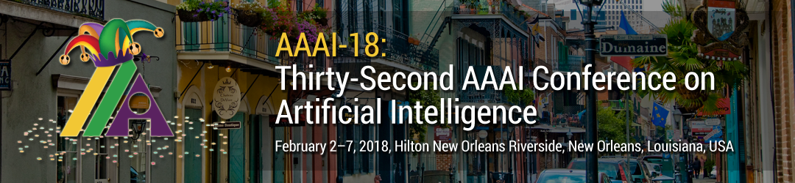

2018年国际人工智能协会（AAAI2018）论文录用名单近日发布，我实验室博士生孙立言、硕士生樊志文（共同一作）在基于深度学习的MRI压缩感知重建方面的研究论文“Compressed Sensing MRI Using a Recursive Dilated network”被该会议录用。这是本实验室2017年第3篇CCF A类会议论文，前两篇分别发表在CVPR2017，ICCV2017。同时这也是本实验室硕士生又一次作为第一作者在CCF A类会议上发表论文。
本篇论文是在实验室导师组黄悦副教授、丁兴号教授的悉心的指导下完成的，论文提出一个新的以在甚少参数的情况下获得当前最优效果。详细可以在网上查找原文。
注：AAAI最早是美国人工智能协会（American Association for Artificial Intelligence），后来更名为Association for the Advance of Artificial Intelligence。AAAI会议是国际上公认的顶级会议，在中国计算机学会推荐的排名表中列为A类会议。